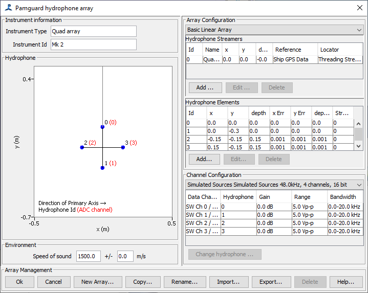

The array configuration dialog is now opened from the Settings>Hydrophone
array menu.

The array dialog is divided into five distinct regions.
1) Hydrophone Positions
Provides a graphical display of the
hydrophone positions within the array.
2) Array Configuration
Lists the individual streamers and hydrophone
elements making up the array.
3) Channel Configuration
Lists the software channels
associated with a Sound Acquisition Module..
4) Environment
Lists environmental parameters.
5) Array Management
Allows you to create, import, export and
rename different hydrophone arrays.
This part of the dialog is for information purposes only and there are no configuration options. Hydrophone positions are shown relative to the reference coordinate and heading. Physical hydrophone numbers are shown in black. Software channel numbers are shown in red. It is possible, if no software channel is connected to a particular hydrophone that the software channel will be absent for some hydrophones.
Coordinate Frame
For towed systems it is assumed that the vessel's GPS is at (x,y) = (0,0) and is travelling
in the forward (increasing) y direction. Consequently, for an array
towed astern of the vessel, y coordinates are generally negative
numbers. For a single array in the centre line of the vessel with a
centrally mounted GPS, all x coordinates will be zero, etc. For display
purposes, depth is entered as a positive number, however developers
should be aware that within the PAMGuard data model, the positive z
coordinate is upwards, therefore depths are stored as negative numbers.
For fixed locations, the diagram is relative to the heading set for that mooring, which should be an angle relative to True North. If no heading is set, the angles are relative to True North.
This lists the individual streamers and hydrophone elements making up an array.
Selecting an array
If more than one array is available within a configuration, a
particular array may be selected using the drop down list. Note that
only one array is loaded at any one time.
Hydrophone Streamers
If you are using a towed array you should define one or more streamers which will
be shown in the Hydrophone Streamers table.
A Streamer is used to refer to any cluster of hydrophones which share a common origin, e.g. a towed array or a buoy of some sort would normally be entered as a single streamer containing one or more hydrophones.
Use the Add, Edit and Delete buttons to add, edit and delete streamers. When you add or edit a streamer the Streamer Dialog will appear which allows you to set up the streamer coordinates and other properties.
You will not be able to remove the last streamer. You will also only be able to delete a streamer if no hydrophones are associated with that streamer.
Hydrophone Elements
This area lists individual hydrophone elements. Each hydrophone is given a unique Id which is referred to in the Channel Configuration section and is also associated with a single hydrophone streamer.
Use the Add, Edit and Delete buttons to add, edit and delete hydrophones. When you add or edit a hydrophone the Hydrophone Dialog will appear.
The first stage of most PAM processes is to acquire the sound with a digitiser (e.g. a sound card) or some other Sound Acquisition module within the PAMGuard model.
It is possible for PAMGuard to operate with more than one Sound Acquisition module and a one-to-many relationship can exist between hydrophones and data channels within the sound acquisition modules. For instance, a single multi-element array may contain both low and high frequency hydrophones, some of which are connected to a low frequency digitiser and other high frequency hydrophones.
The drop down list at the top of the Channel Configuration panel will list all Sound Acquisition Modules currently instantiated in the PAMGuard data model. Information on a single Sound Acquisition module is displayed at any one time.
By default, when a sound acquisition module is created, it will map it's channels 1 to 1 to the PAMGuard array. To change these mappings, select the software channel of interest in the Channel Configuration panel and press 'Change hydrophone' and select the hydrophone you want to relate to that software channel.
Other parameters displayed in the list area of the Channel Configuration panel are set in the Sound Acquisition dialog and are for information only.
This currently contains the speed of sound in sea water and an estimate of the error on the speed of sound measurement.
(It is possible that future releases of PAMGuard will allow entry of a sound speed profile here ).
When you have finished with the PAMGuard Hydrophone Array dialog, press the OK button.
To exit without saving changes, press Cancel.
Other buttons perform the following actions:
New Array: Creates a new PAMGuard hydrophone array
Copy: Copies the currently loaded array
Rename: Renames the currently loaded array
Import: Imports a hydrophone array from a PAMGuard Array File (.paf)
Export: Exports the currently selected array to a PAMGuard Array File (.paf)
Delete: Deletes the currently selected array.